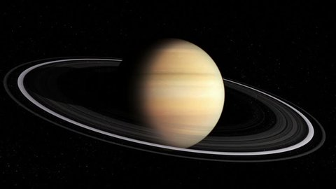

Mercúrio
Vênus
Terra
Marte
Júpiter
Saturno
Urano
Netuno
Ursa Maior
Ursa Menor
Cassiopéia
Cruzeiro do Sul
Pégaso
Vy Canis Majoris
V354 Cephei
WOH G64
Estrelas cadentes
Teoria do Big Bang
Órbitas: O que são?
Asteróides
Saturno
Saturno, é o segundo maior planeta do sistema solar em massa e tamanho, o sexto planeta mais próximo em distância ao sol.
Últimos Artigos:

As Estrelas são corpos celestes que têm luz própria
Estrelas são grandes esferas de plasma, mantidas por sua própria gravidade. As estrelas emitem luz, calor e outros tipos de radiação em razão dos

As Estrelas são corpos celestes que têm luz própria
Estrelas são grandes esferas de plasma, mantidas por sua própria gravidade. As estrelas emitem luz, calor e outros tipos de radiação em razão dos
Imagem do planeta Saturno
Saturno, é o segundo maior planeta do sistema solar em massa e tamanho, o sexto planeta mais próximo em distância ao sol. Saturno é facilmente visível a olho nu como um ponto de luz que não cintila. Saturno também foi considerado o de movimento mais lento. A uma distância do Sol que é 9,5 vezes maior que a da Terra, Saturno leva aproximadamente 29,5 anos terrestres para fazer uma revolução solar.
Saturno foi inicialmente revelado pelo astrônomo italiano Galileu, tendo sua composição quase toda baseada em hidrogênio, Saturno tem ainda a lua mais diferente do sistema solar, batizada de Titã, ela possui uma atmosfera própria extremamente densa e pesada, perdendo apenas para a pressão atmosférica de Vênus, não sendo sua única lua, já que Saturno possui uma extensa cadeia de outras luas. Claramente o que mais diferencia Saturno de todos os outros planetas são os seus anéis, ainda não se sabe qual a origem de Saturno (ou de qualquer outro planeta), mas seus anéis contêm grandes vestígios que podem sim apontar sua origem.
Órbita do Planeta
A sua orbita também é comum como de outros planetas, sendo levemente inclinado e possuindo movimentos de rotação e translação como qualquer outro planeta.
Algo interessante é que isso indica que Saturno provavelmente tem estações do ano, claro que elas funcionam de uma maneira totalmente diferente das da Terra, visto que as condições são completamente diferentes, estima-se que se elas acontecem, cada estação dura em média 7 anos.
Rotação
Curiosamente, os movimentos de rotação de Saturno são menores do que o habitual, colocando em base seriam por volta de 10 horas, sendo algo difícil de determinar já que a concentração altíssima de nuvens de hidrogênio dificulta a visualização clara de Saturno.
Os anéis de Saturno
Visto da Terra, os anéis parecem sólidos, mas de perto, eles são faixas translúcidas feitas de incontáveis partículas, principalmente gelo, algumas rochas.
Alguns não são maiores do que um grão de açúcar, outros tão enormes quanto montanhas. Eles dão voltas e mais voltas, mantidos no lugar por um equilíbrio delicado entre a gravidade de Saturno e sua velocidade orbital, que os puxa para o espaço. As estimativas da massa dos anéis variaram enormemente durante décadas, começando com a espaçonave dupla Voyager, que passou zunindo por Saturno no final dos anos 1970 e início dos anos 1980 em seu caminho através do sistema solar. Mesmo a Cassini, situada dentro da órbita de Saturno, não conseguiu fornecer medições precisas até o final. Em termos mais terrestres, os anéis têm cerca de metade da massa de toda a plataforma de gelo da Antártica, espalhados por uma superfície 80 vezes maior que a da Terra.
Artigos relacionados

Sistema Solar
Das temperaturas escaldantes de Vênus até o maior vulcão do Sistema Solar em Marte: é hora de conhecer a [...]!
Marte
Das temperaturas escaldantes de Vênus até o maior vulcão do Sistema Solar em Marte: é hora de conhecer a [...]!

Urano
Das temperaturas escaldantes de Vênus até o maior vulcão do Sistema Solar em Marte: é hora de conhecer a [...]!
Jupiter
Das temperaturas escaldantes de Vênus até o maior vulcão do Sistema Solar em Marte: é hora de conhecer a [...]!
Plutão
Das temperaturas escaldantes de Vênus até o maior vulcão do Sistema Solar em Marte: é hora de conhecer a [...]!